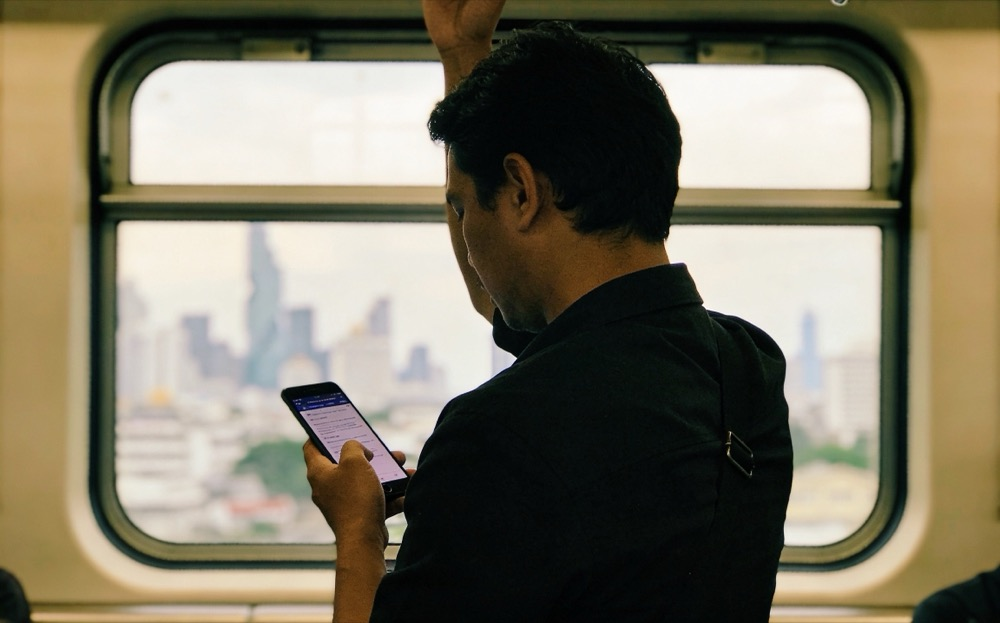

Thai reading · for English speakers in tech
You speak some Thai and read it slowly. You work in or love tech. This coach starts from the
words you already know — for loop, deploy, model — and reads the Thai
around them with you, one level at a time.
It instructs in English. It scaffolds, it doesn't translate. And unlike a fresh chat, it remembers your level from session to session.
A short walkthrough of one real reading session — start to finish.
A real tech-Thai sentence isn't uniformly hard for an English speaker. Some of it is already in English — those words are footholds. The coach finds them first, then reads outward.
เมื่อคืนผม deploy โค้ดcode ขึ้น server ใหม่ แล้วเจอ บักbug เพราะ โมเดลmodel มัน overfit กับข้อมูลเก่า
① Anchors — read on sight
deploy · server · overfit. These are already English. You don't decode them — you just read them. Three footholds, free.
② Loanwords — decode by sound
โค้ด · บัก · โมเดล only look Thai. Say them aloud and you hear code, bug, model. Three more, almost free.
③ The Thai stretch — the lesson
What's left is the actual reading: เมื่อคืน, ขึ้น…ใหม่, เพราะ, กับข้อมูลเก่า. Smaller than the wall looked.
Read outward from your footholds and the whole line opens: “Last night I deployed code onto a new server — then hit a bug, because the model overfit on old data.” The wall was smaller than it looked.
English anchor — read on sight loanword — sounds like the English you know the Thai stretch — what you read together
Because the anchors only work if English is the language you already own, this method is built for English speakers specifically — not adapted from a tool made for someone else.
The Thai you actually want to read is already half in English. You just haven't been shown where.— the whole idea, in one line
No app, no dashboard — it runs as a chat in your own Claude Project. The whole thing turns on one file the coach reads first and updates last. Here's a real exchange, and the file behind it.
The chat — a Claude Project conversation
You
Coach
You
Coach
The reading is the rep — it scaffolds you to the meaning instead of handing you the translation.
The memory — level-state.md, updated at session-close
Reading level: L2, edging into L3 on familiar topics Known anchors: for loop, deploy, server, API, model, overfit Vocab — solid: เมื่อคืน, ขึ้น, ใหม่, ข้อมูล Recurring weak spots: GRAMMAR — word boundaries in long phrases Session log: 2026-05-22 — read a deploy/bug line at L2; worked on word boundaries; learned 2 words Next focus: recycle "ข้อมูลเก่า"; push one L3 line
Highlighted lines are what this session added. You paste this block back at the start of the next one — that's the whole memory.
Before it says anything, the coach reads your level-state — your level, your anchors, the weak spots you keep hitting, and the focus it set you last time. No starting from zero.
From a leveled tech-Thai ladder (L1–L5), and starts the read from the English anchors you already know.
Finds the anchor, segments the unspaced Thai, decodes the loanword by sound. It doesn't hand you the translation — the reading is the rep. (When you genuinely just need the gist, say so and it'll give it.)
When the same thing keeps snagging, it tags it — script, grammar, or vocab — and drills it directly, so it stops costing you.
At the end it logs the words you locked in, the weak spot you cleared, your next focus — and hands the block back for you to save. That block is the memory that makes the next session continuous.
One word clicks. Then the next. That small click is the whole point.— reading, one rep at a time
A café before work, the skytrain home, the sofa at night. The coach lives in a chat, so your reading practice goes where you go.

Not a claim that it reads Thai better than a fresh chat. It's about what a fresh chat structurally can't do.
A cold AI reads and explains Thai content perfectly well in the moment — the in-session support isn't the edge, and it's copyable. The one thing a fresh chat can't do is remember where your reading is. Ask one: it'll tell you it has no memory of your level and point you to a flashcard app.
This coach holds that memory in level-state.md — your level, anchors, solid vs. shaky vocab,
recurring weak spots, and what's next — read first every session and updated at the end. Paired with the
English-anchor reading method, that's the whole point: tech-domain reading + an English-speaker's
pedagogy + level-tracking, in one place.
It's a personal tool first. Its value doesn't depend on out-competing any app — it depends on remembering where your reading is, and helping it climb.
identity.md, rules.md, examples.md, and the reference/ files as project knowledge.reference/level-state.md, fill the block with your real current reading level — honest, not aspirational. The coach never invents your level.reference/reading-ladder.md. A handful is enough to start.No — and it won't claim to. A cold chat reads and explains Thai fine in the moment. The difference is structure: it remembers your level across sessions, which a fresh chat can't.
No, and it'll warmly tell you so. The tech vocabulary is the on-ramp that makes this work for an English speaker; outside it, a general Thai reader or tutor will serve you better, and the coach will point you there.
Not yet. This is for intermediate readers who know the script but read slowly. If you're still learning the alphabet, an alphabet course comes first.
Not in v1. Reading-first by design — reading is the goal, and it's visual. Writing and speaking are later phases.
You do — real tech-Thai you actually read, plus your honest starting level. The coach is built to never fabricate Thai: where a passage slot is empty, it asks you for one rather than inventing it.
| File | What it holds |
|---|---|
identity.md | Who the coach is, who it serves, its forced first action. |
rules.md | The modes, the two warm boundaries, level-progression rules. |
examples.md | Seven worked sessions, beat by beat. |
reference/level-state.md | The moat. Your level, anchors, vocab, weak spots, log, next focus. |
reference/reading-ladder.md | The L1–L5 tech-Thai curriculum (passage slots you fill). |
reference/register-map.md | The loanword-anchor pedagogy — anchors vs. stretch. |
reference/reading-frameworks.md | The four named scaffolding methods. |
Tomorrow morning, one more line. That's how reading climbs.— pick it up where you left off